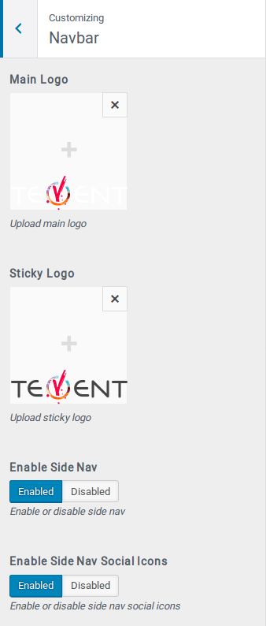
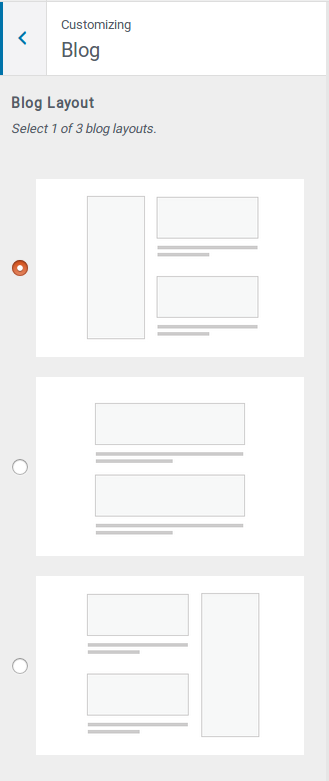
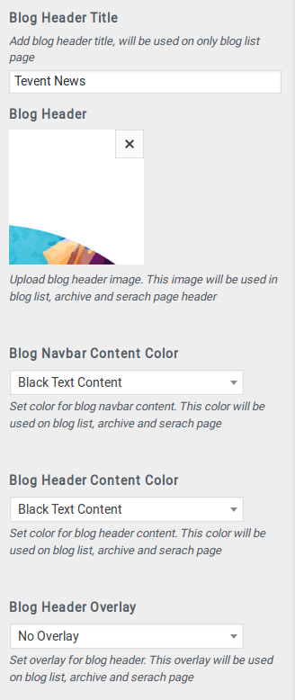
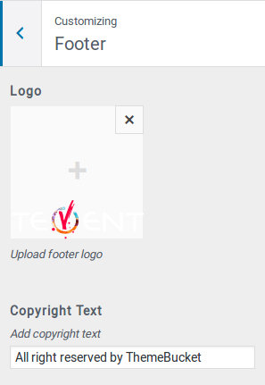
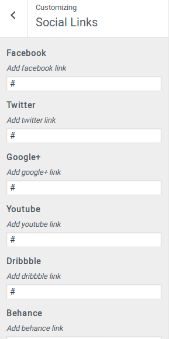
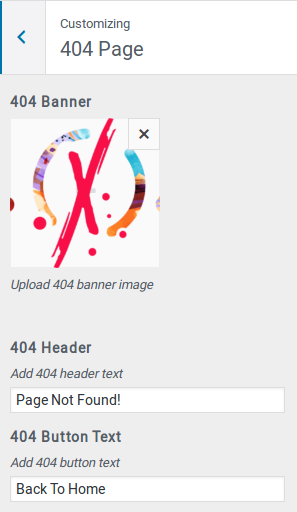
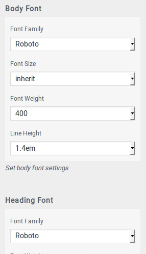

Thank you for purchasing Tevent WordPress Theme.
Login to your WordPress installation then go to Themes from Appearance. Click on Add New button and then Upload Theme button. Browse and select tevent.zip then click on Install Now button, wait for a few seconds and then you are ready to go. Tevent is successfully installed. Congratualtion!
There are minimum requirements to install and use Tevent WordPress Theme. And those are follwings:
Go to Install Plugins from Appearance menu, then install all the required and necessary pluins. And make sure to install required plugins before importing demo contents.
Before importing demo contents, make sure all the required plugins are installed and activated. To importing demo contents we will be using One Click Demo Import plugin and make sure this plugin is installed and activated as well.
If you successfully install and activate One Click Demo Import you'll get Import Demo Data menu under Appearance menu. Click on that menu and then click on the big Import Demo Data button. You've to wait for a few minutes (depends on internet speed) to complete the import process. After importing you're ready to go.
All the theme options or settings are controlled using Customizer. Open customizer panel by click on Customize menu from Appearance menu.

Logo: From navbar tab you can upload main logo and sticky logo.
Sidenav: You can enable sidenav. Sidenav is basically is widgetized area, you'll find a sidenav widget area on widgets page. And there you can add widget to sidenav.
Social Icons: You can enabled or disable sidenav social icons by click on the toggle button. To add social links please go to Social Icons tab.

Layout: There are 3 different blog layouts, (a) Left sidebar (b) Center - without sidebar (c) Right sidebar. This layout setting is applicable for blog list, single blog, archive and search page.

Blog Header Title: This field is only for blog list page.
Blog Navbar and Header: You can change blog navbar content color, header content color using these fields.

Add footer logo and change copyright text from here.

Add social media links here. These links will be shown on footer and sidenav.

Add 404 page image and change 404 page heading and button text.

Change body and heading typography from here.
Thank you for purchasing and using Tevent WordPress Theme. Feel free to reach us if you need any help. Our email address is: support@themebucket.net